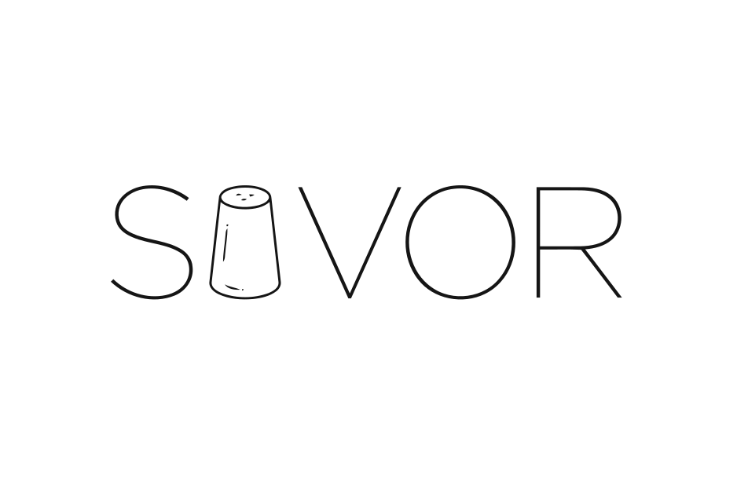

ECHOES · Cultural Heritage Cloud
Part oneSAVOR is designed to be legible at three altitudes — to the curator who works folio by folio, to the researcher who works at scale, and to the cook who simply wants to know what's for dinner.
A bilingual recipe corpus is not a database of dishes — it is the kitchen as archive, the archive as conversation.